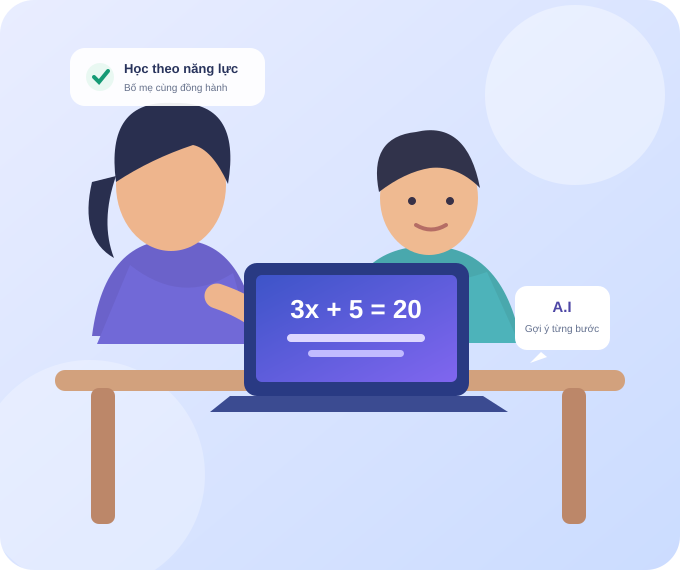

Con chưa vững kiến thức nền
Bài mới liên tục nối tiếp bài cũ, khiến con dễ mất tự tin khi không theo kịp.
Nên bắt đầu: xác định phần kiến thức cần ôn.
Dù con cần củng cố kiến thức, tự tin hơn khi giải bài hay muốn học nâng cao, Học Toán Online A.I giúp bố mẹ bắt đầu bằng việc tìm hiểu năng lực hiện tại và chọn nội dung học phù hợp.

Con cần củng cố kiến thức, thêm tự tin khi làm bài hay tìm thử thách mới? Bố mẹ hãy bắt đầu từ nhu cầu thực tế của con.
Bài mới liên tục nối tiếp bài cũ, khiến con dễ mất tự tin khi không theo kịp.
Con biết công thức nhưng chưa biết bắt đầu từ đâu, thường cần người hướng dẫn.
Con đã nắm bài cơ bản và cần thử thách mới phù hợp với khả năng.
Trước khi chọn bài học, con cần biết mình đã nắm vững kiến thức nào và phần nào cần luyện thêm. Bảng bên cạnh minh họa các chủ đề có thể học theo từng lớp.
Lộ trình thực tế chỉ được xác định sau khi có kết quả đánh giá của học sinh.
Bắt đầu tìm lộ trình cho con →Chọn lớp để xem các chủ đề minh họa; chưa phải kết quả đánh giá cá nhân.
Ôn các phép tính và quy tắc dấu
Luyện tính giá trị biểu thức
Nhận biết, suy luận và giải bài tập
Củng cố những phần con chưa vững
Ví dụ chủ đề theo lớp, không phải lộ trình cá nhân hoặc kết quả học sinh thật.
Ví dụ minh họa cách hướng dẫn từng bước; không phải phiên chat A.I trực tiếp.
Khi gặp bài khó, con được hướng dẫn bằng những câu hỏi nhỏ để tự tìm cách giải, thay vì chỉ nhìn đáp án có sẵn.
Toàn bộ số liệu và chủ đề trong bảng là giả định để minh họa giao diện.
Bố mẹ có thể xem con đã học nội dung nào, phần nào cần luyện thêm và bài học được gợi ý tiếp theo.
Bố mẹ có thể bắt đầu từ bước đăng ký không thanh toán. Thông tin gói học trả phí sẽ được công bố khi hoàn tất chính sách chính thức.
Đăng ký tài khoản phụ huynh để tìm hiểu hình thức học và bước đánh giá đầu vào.
Các gói học mở rộng sẽ được giới thiệu khi có bảng quyền lợi, mức sử dụng và học phí chính thức.
Xem các chủ đề minh họa theo lớp và tìm hiểu cách đánh giá kiến thức trước khi lựa chọn lộ trình.
Thông tin học tập của trẻ cần được sử dụng đúng mục đích. Bố mẹ nên đọc chính sách quyền riêng tư trước khi đăng ký.
Kênh liên hệ, đơn vị vận hành và điều khoản sử dụng sẽ được công bố trên website chính thức.
Website hướng đến học sinh lớp 1–12 với mục tiêu khác nhau. Việc lựa chọn nội dung cần dựa trên kết quả đánh giá và khả năng thực tế của con.
Không. Nội dung theo lớp chỉ giúp bố mẹ hình dung cách tổ chức bài học. Lộ trình cá nhân cần dựa trên bài đánh giá năng lực thực tế.
Không. A.I là công cụ hỗ trợ học và luyện tập. Phụ huynh nên phối hợp với giáo viên khi con gặp khó khăn kéo dài hoặc nội dung phức tạp.
Biểu mẫu chọn lớp trên trang này không thu tiền. Quyền lợi và điều kiện thanh toán cần được công bố rõ trước khi mua gói trả phí.
Chọn lớp và mục tiêu học, sau đó tạo tài khoản phụ huynh để bắt đầu.